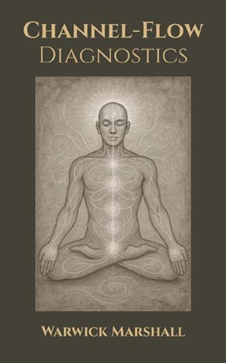

⚡ Channel Flow Diagnostics
Map seven nodes and forty-two channels from Sovereign of Mind Ch.9—symptom refinement and remediation prompts.
Where is your energy blocked? Map the flow between your 7 nodes and 42 channels, identify blockages, and restore internal flow.
This system helps you refine symptoms to identify specific “channels of concern”—blockages in the flow between the 7 core nodes (Base, Sex, Gut, Heart, Throat, Mind, Crown). Based on Chapter 9: Node Mapping and Channel Dynamics from Sovereign of Mind, this tool analyzes the 42 channels of inter-node dynamics to provide targeted remediation strategies.
Identify channel blockages and receive strategic remediation suggestions.
Interpretive Frame: Nodes and channels are symbolic representations of functional capacities and constraints. The system maps experience patterns, not metaphysical anatomy. Scores indicate perceived flow constraints, not deficiency or damage.
Understanding the Node and Channel Model
Human systems have long sought to map consciousness: chakras as vertical ascent, the Tree of Life as archetypal connection, Integral Theory as developmental coherence, Active Inference as predictive flow. Each points to the same truth: identity moves through structure.
The Node and Channel Model offers a functional framework for tracking perception, impulse, and choice as they move through the human field. Seven nodes act as seats of will, each carrying its own instinct, awareness, and authority. Channels link them, governing whether faculties reinforce, isolate, or distort one another.
The model offers a roadmap to explain experience in terms of internal channel dynamics. Aberrant expressions can be read as routing errors — be it a rage without cause, desire without aim, or fatigue without engagement. Flow states reveal whether the system is open, blocked, or overloaded.
Channel States
Open Channels: Instinct, emotion, thought, and insight work together instead of fighting. When channels are open, intuition and logic support each other. Emotion still matters but does not take over. You notice body signals, and actions match what you know is true for you.
Blocked Channels: Nodes act in isolation, cut off from stabilizing input. When channels are blocked, the system loops - the gut mistrusts everything and overreacts, the intellect detaches spinning in abstraction, the heart projects need or collapses into guardedness.
Overloaded Channels: One node dominates, distorting overall coherence. This creates imbalance where a single perspective hardens into assumed truth, preventing adaptive response.
Healthy but Lacking Flow: Communication between nodes is present but operates at reduced intensity. This signals that a node requires support or reinforcement - a natural informing mechanism, not dysfunction.
Integration and Maturation
Integration is the process by which information and stuck energy migrate between centers, allowing for healthy expression and a more cohesive, functional self. When energy or unresolved information becomes stuck in one center, it manifests as blockages - emotional repression, creative stagnation, or physical tension.
Maturation occurs as each center develops through repeated use and healthy expression. Emotional resilience, physical vitality, mental clarity, and spiritual depth all strengthen as integration enables these faculties to communicate and function more cohesively.
True self-sovereignty is orchestration - the balanced interplay of all faculties where no single node directs without conscious accountability. Internal freedom comes from familiarity with the inter-nodal communication: knowing which part of you is speaking, and integrating the impulses with discernment.
The assessment covers:
- Symptom Refinement: Detailed questions to identify specific channel blockages
- Channel Identification: Maps symptoms to specific channels between nodes
- Remediation Strategies: Strategic suggestions for restoring flow and unblocking channels
Detailed Features
- 7 core nodes (Base, Sex, Gut, Heart, Throat, Mind, Crown)
- 42 directional channels mapping
- Symptom refinement questions
- Channel blockage identification
- Strategic remediation suggestions
- Node and channel dynamics analysis
- Export functionality for AI integration
Methodology
- Belief Mastery: Belief architecture, pattern recognition, calibrated change.
- Sovereign of Mind: Sovereignty, consent, and authorship in decision-making.
- Distortion Codex: Distortion detection, reality testing, and corrective clarity.
Disclaimers & notices for this tool are listed on the home page.
❓ How to Use This Assessment
Understanding the Scale (0-10):
- 0-2 (Not at all / Never): The symptom does not apply to you at all.
- 3-4 (Minimal / Rarely): The symptom occurs occasionally but has minimal impact.
- 5-6 (Moderate / Sometimes): The symptom is present with moderate frequency or intensity.
- 7-8 (Significant / Often): The symptom occurs frequently or with significant intensity.
- 9-10 (Extreme / Always): The symptom is nearly constant or extremely intense.
Guidelines:
- Answer based on your current experience and patterns
- Consider how symptoms relate to flow between different aspects of your being
- Be honest - identifying blockages is the first step to restoration
- You can go back and change answers using the "Previous" button
Stage 1: Node Identification
Channel Analysis Results
Save your report
Download a single MHTML snapshot of the full report (works offline in Chromium-based browsers).